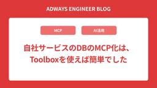

Adwaysエンジニアブログ
https://blog.engineer.adways.net/
adwaysエンジニアブログ
フィード

運用担当者がGCPのIAM棚卸しを自動化した話
Adwaysエンジニアブログ
こんにちは。インフラストラクチャーDivの千田です。 主にクラウド（GCPとAWS）やSaaSなどの運用業務を担当しています。 背景：棚卸しを自動化する前に何が起きていたか 作ったもの：IAM棚卸し自動収集システム 設計で工夫したポイント 「洗い替え」と「蓄積」を使い分ける SA削除は段階的に 苦労したこと：運用中心のキャリアからのツール開発 学び：運用の経験があったからこそ見えたこと 運用側の知識があったからこそ見えた設計ポイントがあった 自分で手を動かしてサービスを触ったことが、その後の問い合わせ対応にも役立った 開発未経験でも、相談相手がいれば形にできる まとめ 今回は、GCPのIAM権…
5時間前

自社サービスのDBのMCP化は、Toolboxを使えば簡単でした
Adwaysエンジニアブログ
こんにちは！ADWAYS DEEEでプロフェッショナルテクニカルマネージャーをしている呉です。 前回はワークフロー自動化ツールn8nを使い始めて見えてきたことという記事を書きました。 その中で「自然言語でのDBクエリ」を少しだけ紹介したのですが、あれから構成が大きく変わりました。 現在は自社サービスのDBをMCPサーバとして公開し、社内から自然言語で問い合わせられる状態になっています。 やってみて分かったのは、MCPサーバを作る部分そのものは、既存のツールを使えばかなり簡単だということでした。 今回は自社のDBにAIから触れるようにしたいエンジニアの方に向けて、使ったツールと、自分たちで手を入…
7日前

Claude Codeを全社導入するためにmanaged settingsをMDMで配布した話
Adwaysエンジニアブログ
こんにちは。技術本部でエグゼクティブテクニカルマネージャーをしている渡瀬です。 エンジニア組織を横断して、技術戦略の策定や開発環境の整備に携わっています。 その一環として、Claude Codeをはじめとした生成AIの全社活用の推進と、その安全対策を担当しています。 この記事では、Claude Codeを組織に配るときに何を統制すべきか、私たちがどう実装したかを書きます。 具体的には、managed settingsの設計とMDMによる全社配布、OpenTelemetryを使った利用ログの可視化、法務との連携体制の話です。 個人としての使いこなしTipsは扱いません。組織にAIコーディングエー…
14日前
AI時代のデータ活用に向けて、データ基盤を再構築した話
Adwaysエンジニアブログ
こんにちは、ADWAYS DEEEでデータエンジニアをしている佐藤です。 私たちのチームは、「JANet」や「AppDriver」といった自社プロダクトを支えるデータ基盤を担当しています。今回は、このデータ基盤をどう構築・運用しているかを紹介します。 データ基盤プロジェクト発足の背景 データ基盤の構成 アーキテクチャ プロジェクト構成 データ基盤の層 開発プロセスの整備 本番相当のデータ環境 データ利用者からのアクセス 工夫した点 メタデータの管理 dbt snapshotによるマスタの履歴管理 今後 おわりに データ基盤プロジェクト発足の背景 データ基盤チームとして本格的に動き始めたのは、2…
21日前
Cloud Functions の横断的関心事をデコレーターに集約する
Adwaysエンジニアブログ
こんにちは！ 広告事業本部でリードウェブアプリケーションエンジニアをしている森田です！ 今回は Cloud Functions（第2世代）を複数本運用する過程で生まれた @functions_endpoint デコレーターの設計についてご紹介します。 モノレポで54本もの Cloud Functions を管理するようになり、各関数に繰り返し書いていた定型処理をデコレーターに集約することで、コードの見通しが大きく改善しました。 モノレポで Cloud Functions を管理する工夫については前回の記事で紹介しているのでよければあわせてご覧ください。 blog.engineer.adways…
1ヶ月前
AI-DLCで開発生産性は上がるのか？レガシーモダナイズで実際に試してみた
Adwaysエンジニアブログ
こんにちは。アドプラットフォーム事業部のアプリケーションエンジニアをしている桒原です。寝苦しい夜が続きますね。とうとうエアコンをつけっぱなしにする季節がやってきました。そんな中、AIを前提とした開発スタイルとして提唱された、AI-DLCを試してみたので、今回はその振り返りを書いてみます。 AI-DLCという開発ライフサイクルを試してみた AI-DLCとは 導入の経緯 結果: 目標の2倍には届かなかった Inceptionフェーズの振り返り Constructionフェーズの振り返り 今後やろうとしていること まとめ AI-DLCという開発ライフサイクルを試してみた 私の所属しているチームでは、…
1ヶ月前
「クラウド環境を使いたい」の一言でkickflow申請が完成する。300以上の申請ルートを、LLMで「変更に強く」作った話
Adwaysエンジニアブログ
こんにちは。コミュニケーションデザイングループでシニアプロダクトエンジニアをしている大野です。はじめに：何を作ろうとしていたか社内の申請業務にはワークフローツールとして [kickflow](https://kickflow.com/) を使っています。今回チャレンジしたのは、**「普段使っているSlackで話しかけるだけで、正しいkickflowの申請下書きが自動で作られる」** という仕組みを、LLMで実現することでした。申請のたびにkickflowを開き、どのワークフローを選ぶか迷い、項目を1つずつ埋める — この手間を、Slackでの一言に置き換えるのが狙いです。例えば「開発用にクラウド環境を使いたい」とSlackに書くだけで、適切なワークフローが選ばれ、必要な申請の下書きまで用意される、という体験を目指しました。
1ヶ月前
SDD × Claude Codeで手戻りを減らしてみた話
Adwaysエンジニアブログ
こんにちは！ADWAYS DEEE でアプリケーションエンジニアをしている25卒の日置です！ これまでは、Claude Code 関連の記事を3本書いてきましたが、今回もこの続きです！ 過去3回は「AI との向き合い方」や「AI エージェント開発」といった、いわば 技術トピック にフォーカスした内容でした。今回は少し視点を変えて、チームの 開発フローそのもの について書きたいと思います。 テーマは SDD（Specification-Driven Development） です。 【背景】Vibe Coding で積み上がっていた手戻り 【SDDとは】要件定義の質を上げてから実装させる 【実践…
2ヶ月前
はじめての監視実装をGitLab Runnerでやってみて学んだこと
Adwaysエンジニアブログ
こんにちは！ 技術本部の技術戦略ディビジョンで主にEOL対応巻き取りなどをしているインフラエンジニアの片岡です。 この記事では、以下の内容を書いています。 監視実装をやったことが無かった人が0から監視に取り組んで学んだこと 本当に重要な問題にアラートを発報するという原則 ワークメトリクスからリソースメトリクスへ掘り下げる考え方 セルフホストのGitLab Runnerにおいての監視で工夫した点 特にシステムの監視をどのように取り掛かれば良いか分からない方の参考になれば嬉しいです。 背景 そもそも、GitLab Runnerの監視に取り掛かった背景から説明します。 流れとしては以下の通りです。 …
2ヶ月前
New Relic 移行をきっかけに Observability の世界に踏み出した
Adwaysエンジニアブログ
ADWAYS DEEE で Web アプリケーションエンジニアをしています、新卒 2 年目のあーるです。 普段はモダナイズチームでレガシーシステムの改善・モダナイズに取り組んでいて、ようやく仕事にも慣れてきたかなという頃合いです。 監視ツールの移行作業と New Relic Advance NEXT をみてきて、Observability の世界に足を踏み入れました。この記事はその一歩目です。 New Relic 移行のはじまり 降ってきた移行作業 ある日エンジニア向けの Slack チャンネルに CTO からこんな投稿がありました: エンジニアのみんなへ、NewRelicの移行判断を考えてい…
2ヶ月前
モノレポで Cloud Functions を管理している実践記録
Adwaysエンジニアブログ
こんにちは！ 広告事業本部でリードウェブアプリケーションエンジニアをしている森田です！ 最近ありがたいことに社内向けサービスの0→1の開発に携わる機会が2度ありました。 それらのサービスでは Google Cloud Workflows x Cloud Functions（第2世代）を採用しています。 私のチームは主に AWS EC2 上の Ruby on Rails でウェブアプリケーションの構築をメインとしてきたチームです。 Cloud Functions や Workflows、ひいては Google Cloud の知見があまりない状況でした。 そんな中で一年近くの開発を経てユーザー検証…
2ヶ月前
気づいたらチームのエンジニアが自分1人だった新卒の話
Adwaysエンジニアブログ
こんにちは！ADWAYS DEEE でアプリケーションエンジニアをしている25卒の日置です！ 前回のブログ「Claude Code を相棒にした新卒エンジニアが、次は AI エージェントに挑戦してみた話」を書いてから半年近くが経ち、こうしてまた執筆の機会をいただきました。気づけば社会人になってから1年が経過し、いつのまにか「新卒2年目」と呼ばれる立場になっていることに、時の流れの速さを実感しています。 今回は技術的な内容から少し離れて、私が入社してから1年と少しの間で経験した、ちょっと変わったお話を書いていこうと思います。テーマは 「プロダクトチームでエンジニアが新卒1人で開発を回した話」。あ…
3ヶ月前
中途入社の私が、楽しんでワーキングマザーを続けられているわけ
Adwaysエンジニアブログ
こんにちは！2025年7月に中途入社した、技術本部でコーポレートエンジニアをしております河合です。 入社して早数ヶ月。現在はメールサーバー撤去プロジェクトやkickflow整備プロジェクトなど、社内のインフラ整備に奔走しています。 今回は、前職でもコーポレートエンジニアだった私が、アドウェイズに入社して創り上げてきた最強の働き方についてお話しします。 1.往復3時間を家庭の時間に充てて、24時間を「最適化」する 【エンジニアの24時間ハック：タイムスケジュール】 2.リモート最大の敵「コミュニケーション不足」を乗り越える 🔸チームでのコミュニケーションと文化改善（Slack・Asana） 【導…
3ヶ月前
AIで開発が速くなった先で、ユーザーストーリーの役割はどう変わったか 〜ディスカバリーとデリバリーを繋ぐAI化への挑戦と失敗〜
Adwaysエンジニアブログ
どうも、大曲です。なんか今年は体調不良が多いです。もう35歳です。歳をとりました。「AI Engineering Summit Tokyo 2026」で『ディスカバリーとデリバリーを繋ぐユーザーストーリーのAI化』というテーマで登壇してきました。この記事は、その登壇で話した内容をベースに、もう少し腰を据えて書き起こしたものです。
3ヶ月前
Devinにライブラリ更新PRのレビューを任せてみた話
Adwaysエンジニアブログ
こんにちは、ADWAYS DEEEでシニアテクニカルマネージャーをしている飛田です。 みなさんのチームでは、DependabotやRenovateなどが作成するライブラリ更新のPRを放置してしまっていませんか？ 今回は、AIソフトウェアエンジニア「Devin」にレビューを任せることで、この課題の解消に取り組んでいる事例を紹介します。 背景 私たちのチームでは、機能開発にリソースを集中させることが多く、ライブラリの更新が後手に回りがちでした。 DependabotやRenovateといったBotを導入しており、ライブラリ更新のPRは自動で作成されます。しかし、PRが作られてもなかなか手が回らない…
3ヶ月前
【新卒1年目】文系・完全未経験からヘルプデスクへ！怒涛の1年間を振り返る
Adwaysエンジニアブログ
こんにちは！技術本部でヘルプデスクオペレーターをしている新卒2年目の石道です。 気がつけば、アドウェイズに新卒で入社してから早くも1年が経ちました。本当にあっという間の、濃い1年間でした。そこで今回は、完全未経験からスタートした私がこの1年間でどんなことを経験し、何を学んだのかを、振り返りとしてこちらの記事にまとめてみようと思います。 はじめに 実は私は法学部出身で、学生時代はITとは全く無縁の法律の勉強ばかりをしていました。 アドウェイズに入社した理由は、そういった研究の延長線上の話では全くありません。純粋に「ITの世界で新しい挑戦をしてみたい！」という好奇心だけで、知識ゼロの状態で飛び込み…
3ヶ月前
# SDDで品質は上がるのか？ 〜SDDとバイブコーディングでの比較〜
Adwaysエンジニアブログ
こんにちは！技術改善Divに所属している中西です。今回はSDDとバイブコーディングの両方で開発をする機会があったので、それぞれの手法の違いについてまとめたいと思います。 背景：なぜSDDを試したのか やってみたこと：同じ題材を2方式で実装 わかったこと①：動作確認のサイクルが減った わかったこと②：仕様書の不備が、そのまま実装のバグになった わかったこと③：仕様書のレビュー負荷が想像以上にあった 結局、SDDで品質は上がるのか？ おわりに 背景：なぜSDDを試したのか 当初、私が所属するチームではSDDを導入しておらず、AIを使用した開発はほとんどバイブコーディングによるものでした。 バイブコ…
3ヶ月前
AIにAIコンペをやらせたら、人間に負けた
Adwaysエンジニアブログ
こんにちは!! マーケティングテクノロジーDivでデータエンジニアをしている大窄 直樹 (おおさこ)です. AIコーディングエージェント「Claude Code」にKaggleコンペのほぼ全工程を任せてみました. 結果は4316チーム中145位（上位3.4%）. でも2位の人も同じClaude Codeを使っていて, 彼は3日で1位相当のスコアを出していた. 同じAIツールで, なぜここまで差がついたのか. この記事ではその答えを書きます. 参加したコンペについて 自分がやったこと Claude Codeに全部やらせた 一番役立ったのは「Discussion読んで」 スコアの推移と壁 EDAは…
4ヶ月前
2人チームで開発して気づいたこと――"ピザ1枚以下"のチーム経験談
Adwaysエンジニアブログ
お疲れ様です！ ADWAYS DEEEでエンジニアリングマネージャー（EM）をやっている、いとうです。 最近、2人チームで開発を進める経験をしました。 もともと5〜6人で1チームを作っていましたが、複数個のミッションに対してチームを2つに分け、2人チームを編成しました。 実際にやってみると、想定外の発見がたくさんありました。 今回はその経験をそのまま書いてみようと思います。 2人チームを作った背景 実際やってみてどうだったか よかったこと1：コミュニケーションコストがとにかく低い よかったこと2：その結果意思決定が早い よかったこと3：開発速度に大きな懸念が出ない 大変だったこと1：1人休むと…
4ヶ月前
大規模オートスケーリング環境でAWS Configのコストを抑えてセキュリティチェックを実現する
Adwaysエンジニアブログ
はじめに お疲れ様です。技術本部リードセキュリティエンジニアの田口です。 ここ数年でAWSのセキュリティ関連の機能が増えてきており、良い時代になったと感じます。しかしセキュリティと利便性・コストの兼ね合いで頭を悩ませることが多くなったセキュリティ担当者さんも多いでしょう。 今回は、セキュリティのコストに頭を抱える皆様に向け、大規模にEC2オートスケーリングを利用しているAWSアカウントにおいて、 AWS Configのコストを抑えつつセキュリティチェックを実施した取り組みについて紹介します。 「セキュリティチェックをしたいが、AWS Configのコストがネックで有効化に踏み切れない」という方…
4ヶ月前
権限を手放して気づいた、チームへの貢献の仕方 — プロダクトチームに異動した半年間の記録
Adwaysエンジニアブログ
ADWAYS DEEEでリードアプリケーションエンジニアをしています、中村です。前回の記事ではUM（ユニットマネージャー：チームのマネジメント責任者）としてのチーム作りについて書きましたが、2025年10月にAppDriverプロダクトチームにプレイヤーとして異動しました。 技術改善ディビジョンのクラウドチーム（インフラメイン）に長くいて、UM経験もありました。アプリケーション開発をやりたかったのと、マネジメントキャリアを考えたときに異なる領域での経験が足りないと感じていたのが異動の動機です。メンバーの変動でアドテクノロジーディビジョンのAppDriverプロダクトチームに空きが出たタイミング…
4ヶ月前
それ、AIのせいにしてませんか？ ― 読書会で変わったプロンプトとの向き合い方
Adwaysエンジニアブログ
こんにちは、ADWAYS DEEEでアプリケーションエンジニアをしているにっしーです。 私たちの組織では2025年2月ごろからAIツールの業務活用を進めており、現在はClaude Codeを中心に日々の開発に取り入れています。 その取り組みについてはこちらの記事でも紹介しています。 今回は、24卒の同期4人で『LLMのプロンプトエンジニアリング』という本を読書会で読み、学んだことを業務に活かしている話をお伝えします。 24卒同期の過去の記事はこちらです。 新卒1年目のエンジニア成長記 新卒1年目で初めて出会ったテスト駆動開発 新卒１年目で業務改善プロジェクトに参加したら苦難だらけだった話 新卒…
4ヶ月前
プロジェクトの「はじまり」をAIと一緒に効率化した話
Adwaysエンジニアブログ
オープニング 皆さん、こんにちは！ ADWAYS DEEE アドプラットフォーム事業部でマネジャーをやっている「tomoD」です。 以前、執筆したエンジニアブログで 「プロジェクトクローズガイドライン」 についてご紹介しました。（まだ読んでいない方はぜひ！） その記事のまとめ部分でこんなことを書きました。 「クローズがあるのであれば・・・そう、キックオフもあります。プロジェクトキックオフガイドライン。乞うご期待！」 あの一文を覚えていてくださった方、お待たせしました。今回は、その 「プロジェクトキックオフ」 のお話です。 そして今回は「ガイドラインを作った」だけでは終わりません。 「AIを使っ…
5ヶ月前
"ブラックボックス"なクラウドコストに終止符を。〜Looker Studioで全社クラウドコスト可視化基盤を構築した話〜
Adwaysエンジニアブログ
技術本部で商用インフラ全般を担当しているインフラエンジニアの小林です。 今回は、「誰が何にいくら使っているか」がわからない"明細のない電気代"のような状態だったクラウドコストを、インフラ担当者の立場から全社課題として捉え、Looker Studioで可視化した基盤を構築した話を紹介します。 背景・きっかけ システム概要 工夫した点 運用コストゼロの設計 実績値とコスト削減ポテンシャルの両方を可視化 AWSデータのBigQuery連携 GCPデータのBigQuery連携 開発チームへの提案型アプローチ 苦労した点 AWSのエクスポート仕様との格闘 GCPの手動設定の多さ データセットのリージョン…
5ヶ月前
3人チームがAIで仕事量の生産性3倍を達成するまで
Adwaysエンジニアブログ
ADWAYS DEEE 技術改善Div（ディビジョン）でリードアプリケーションエンジニアをやっている山本です。 4月になりました。新年度が始まり、新しい目標を立てている方も多いのではないでしょうか。 さて、今回は私が所属するクラウドチームで2025/9/16〜2025/12/29の約15週間、エージェント型のコーディングAIを活用してチームの生産性を3倍にした取り組みについてご紹介します。 具体的な施策の紹介に加えて、目標に向けてチームをどうマネジメントしたかという観点もお伝えできればと思います。
5ヶ月前
AIを活用した開発を加速させるための環境整備の取り組み
Adwaysエンジニアブログ
こんにちは！ 広告事業本部でユニットマネージャーをしている建人です！ 最近はAIを活用した開発が当たり前になりつつありますが、「とりあえずAIを導入してみたけど、そこからどう進めればいいの？」と悩んでいるチームも多いのではないでしょうか。 この記事では、実際に自分のチームでAIを活用した開発を円滑に進めるために取り組んだ環境整備についてお話しします。 AI活用のはじまりと課題の発見 GitHub Copilot の自動レビューを導入 開発主体がAIへ JiraからGitHub Projectsへの移行 移行の動機 移行してよかった点 Jiraと比べて課題に感じている点 ドキュメント整備の問題点…
5ヶ月前
社内 Windows 端末を Intune で Windows 11 に移行した話
Adwaysエンジニアブログ
こんにちは。アドウェイズでヘルプデスク業務を担当しているヘルプデスクオペレーターの佐々木です。 今回は、社内の Windows 端末を Microsoft Intune で管理しながら、Windows 10 から Windows 11 へ移行した際の進め方を振り返ります。 すでに Windows 10 のサポート終了を迎えているため、いま読むと少しタイミングが遅いテーマに見えるかもしれません。 この記事では、これから移行するための手順というより、数百台規模の端末移行を Intune でどのような方針で、どのような順番で進めたのかを振り返る内容としてまとめます。情シスやヘルプデスク、社内端末の管…
5ヶ月前
それでも意思決定は、人間の仕事だ
Adwaysエンジニアブログ
こんにちは、りょーまです。プロダクト開発組織でマネージャーをしています。 今回は、AI時代における意思決定について考えてみます。 DeepResearchの衝撃と、ある違和感 1年ほど前でしょうか。初めてDeepResearchに触れたときは、本当に衝撃的でした。 ものの数分で自分が知りたいことに対して、網羅的かつ精度の高いレポートが出てくる。 「リサーチはもう全部これでいいじゃん」と、素直にそう思ったことを覚えています。 ところが、何度か使っていくうちに、ある違和感を覚えます。 リサーチ結果がまったく役に立たないときがある。同じツールなのに、この差は何だろうと。 振り返ってみると、リサーチ対…
6ヶ月前
/opsx:apply 以降を完全放置でPR作成までやってくれるスキルを作った
Adwaysエンジニアブログ
はじめに ADWAYS DEEE 技術改善Div 第一ユニットでシニアアプリケーションエンジニアをやっている市橋です。 今回はOpenSpecのapplyフェーズを自律駆動するスキルを作ってみた話をします。 チームでのClaude Code活用を促進したい方々の参考になれば幸いです。 弊社エンジニアのLLM利用環境 ADWAYS DEEEではClaude Code Maxプランが 全エンジニアに 配布されています。 また、SDD（Spec-Driven Development: 仕様駆動開発）についても検証を進めており、SDDを実践するためのフレームワークであるOpenSpecの導入にチャレン…
6ヶ月前
「資格なんて意味ない」を覆した、新卒1年目でAWS SAPまで取得してチャンスを掴み取った話
Adwaysエンジニアブログ
こんにちは！広告事業本部でアプリケーションエンジニアをしている25新卒の佐々木です！ エンジニアの新卒1年目は、勉強しないといけないことが無限にあるし、周りのチームメンバーから信頼を得るのが大変ですよね... そんな中、私は新卒1年目の間に、AWSの資格を3つ（CLF → SAA → SAP）取得することで、周りからの評価とできる仕事の幅が変化したと感じました。 そこで、「資格なんて取る意味あるの？」「資格の勉強の仕方を知りたい！」という方にぜひ見ていただければ嬉しいです。 資格を取ろうと思った理由 AWSの資格について 受験スケジュール 勉強方法 受験結果 辛かったこと 資格をとったことで変…
6ヶ月前